Iz Just Lazy
|
|
|
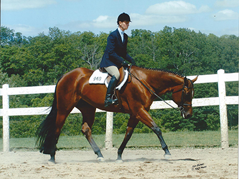 Lovin To Be Lazy
|
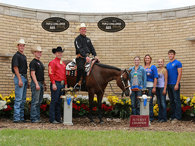 Lope The Line
|
|
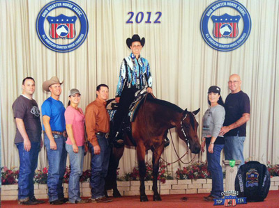 Some Kinda Lazy |
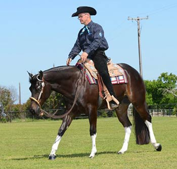 Talk About Lazy |
| 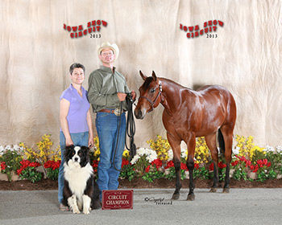 Lopen Version |
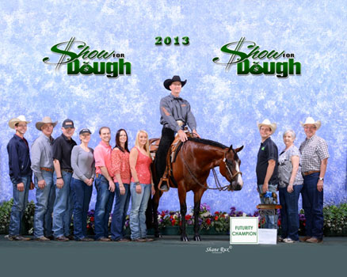 EAZY DAYZIE |
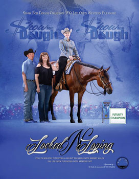
|
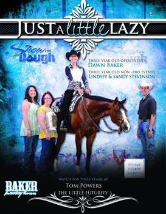 |
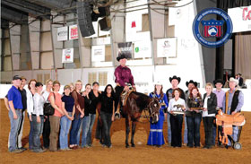
|
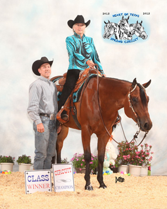 |
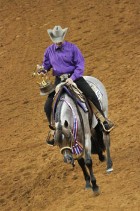
|
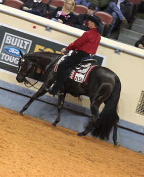 |
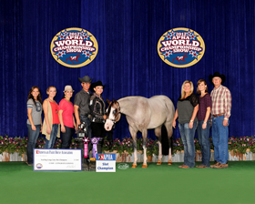
|
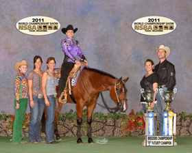 |
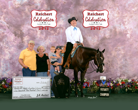
|
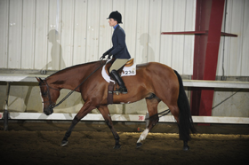 |
HF LAZY LOPIN DIVA
owned by Ronald Gigax - shown by Jacob Gigax
NYATT Showmanship Champion
Showmanship 15-18 3rd
LOPIN FOR A CHEX
owned/shown by Kaleena Weakly
Maturity Non Pro Western Pleasure Reserve Champion?shown by EH Pait Jr
Junior Western Pleasure 9th
Markel Maturity Western Pleasure 6th?
ONE LAZY INVESTMENT
owned by Peek Owen - shown by Virginia Owen
Novice Western Pleasure 13 & Under Reserve Champion
Western Pleasure 12-14 9th
WICKED LOPER
owned by Benton Elliott - shown by Hayden Elliott
Novice Hunter Under Saddle 14-18 3rd
SOME KINDA LAZY
owned by McNair Farm LLC - shown by Kristy Starnes
Coughlin 2 YO Snaffle Bit Western Pleasure Futurity Ltd 9th
Coughlin 2 YO Snaffle Bit Western Pleasure Futurity 10th
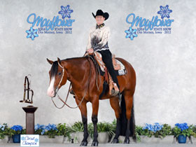 World Show Qualified Amateur Western Pleasure and circuit Champion Mayflower Owned by Tanya Relander |
|
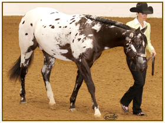 PCE Lazy Loper PCE Lazy Loper aka Kolby is a '10 appaloosa colt out of Lazy Loper he was show all year and placed in the top ten in open western LL and non pro western LL He also finished first in the nation in Performance permit first in the nation in non pro most colorful at halter 3rd in open most colorful at halter and third in open yearling colts at halter. He was trained by Nicole Rice and owned by Kip and Barbara Shepard of south windsor CT. He is shown in open events by Nicole Rice and Non Pro by Barbara Shepard. Watch for him in the two year old WP classes with Nicole Rice. |
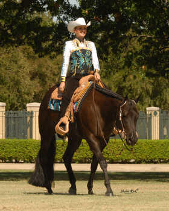 |
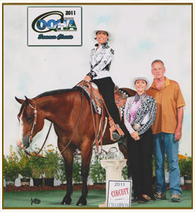 Lazy But Lopin Superior Trail, World Show Qualified Owned by Karri Vernam-Owens |
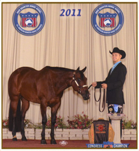 HF Lazy Lopin Diva Shown by Jacob Gigax 2011 AQHA Honor Roll Youth Showmanship, Res Honor Roll Youth Performance Halter Mare, 2011 Congress Winner Youth Showmanship |
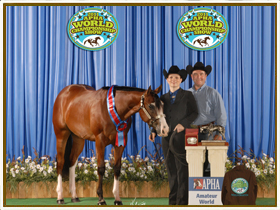 The Home Wrecker Owned and raised by Jill Roraff 2x APHA World Champion |
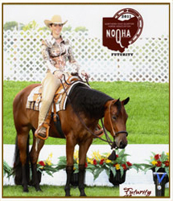 One Lazy Amiga OWNED BY:JEN MURRAY CHAMPION 2011 NOQHA Futurity 2 YO Non Pro Western Pleasure RESERVE 2011 EOQHA Futurity 2 Year Old Non Pro Western Pleasure |
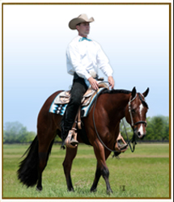 Bein A Little Lazy OWNED BY: KELLY BIRKENHOLTZ CHAMPION 2011 NSBA BCF Ltd NP WP CHAMPION 2011 NSBA BCF Int. NP WP 2011 Tom Powers Futurity Top Ten |
Lopin For A Chex OWNED BY: KALEENA WEAKLY 2011 Multiple Circuit Champion Leading the Nation Am Western Pleasure |
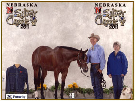 Lucky Lady Lopin Too OWNED BY: BRIAN & MARY JO HAMRICK CHAMPION 2011 Silver Classic Non Pro Longe Line |
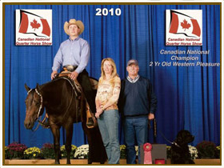 Tricked Out And Lazy OWNED BY: CATHY BAILEY 2011 Gold Rush Futurity Top Five CHAMPION 2010 Canadian National 2 YO WP |
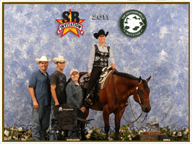 Chex Out My Lope OWNED BY: RITA CRUNDWELL SHOWN BY: AMANDA JACKSON CHAMPION 2011 Southern Belle Invitation Green WP |
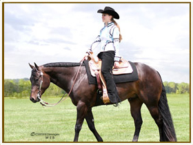 DT Eaze On In OWNED BY: DENNIS & SUSAN TAYLOR |
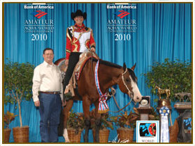 One Lazy Investment OWNED BY: STEVE & TANYA RELANDER |
Lopin For A Chex OWNED BY: KALEENA WEAKLY |
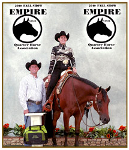 Lazy When Im Hot OWNED BY: KRISTIN ALE |
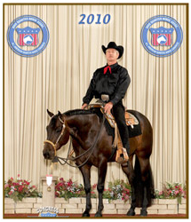 DT Eaze On In OWNED BY: DENNIS TAYLOR |
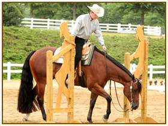 Lofty Loper OWNED BY: LAURIE BOCK |
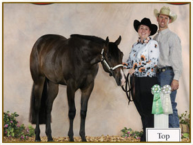 All My LopesNDreams 2009 FILLY OWNED BY: RENEE SEIDEL |
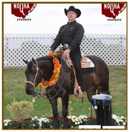 DT Eaze On In OWNED BY: DENNIS TAYLOR |
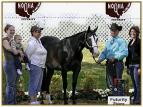 Lopin On A Lazy Day OWNED BY: MARSHA BLACK TRAINED BY: JIM CHAFIN JR |
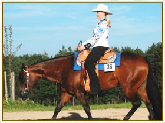 Miss Lazy Version OWNED BY: MIRIAM BOERNER |
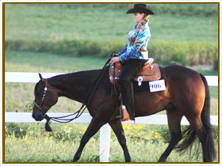 Hot N Lazy OWNED BY: MICHELLE PETROVSKY |
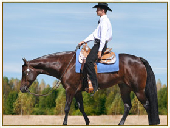 HF Lazy Lopin Diva OWNED BY: RONALD GIGAX SHOWN BY: JACOB GIGAX |
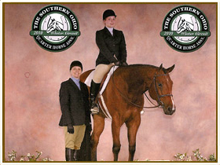 Lazy Duz It OWNED BY: EMILY DELK |
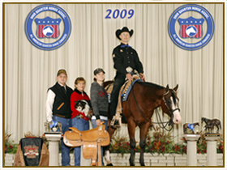 One Lazy Investment OWNED BY: STEVE & TANYA RELANDER |
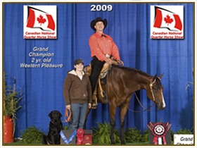 Lazy Invitation OWNED BY: ELIZABETH PRIEST |
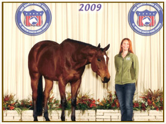 Lovin To Be Lazy OWNED BY: DARINDA BROGLIN |
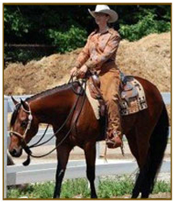 A Chocolate Lazy OWNED BY: BRANDI ROBISON |
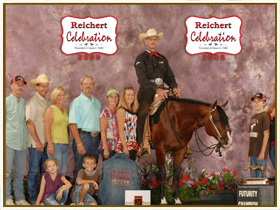 No Doubt Im Lazy OWNED BY: FRANK & LINDA BERRIS |
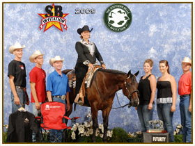 HF Lazy Lopin Diva OWNED BY: MARGARET STORRS |
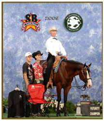 One Lazy Investment OWNED BY: STEVE & TANYA RELANDER |
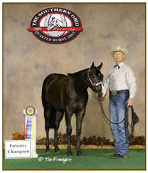 Ima Lazy Boy OWNED BY: GAIL WATERS |
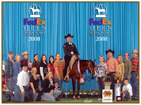 No Doubt Im Lazy OWNED BY: FRANK & LINDA BERRIS AQHA World Show Champion 2 YO Western Pleasure
|
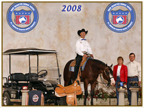 One Lazy Investment OWNED BY: STEVE & TANYA RELANDER Congress Masters Western Pleasure Champion, winner of $100,000 |
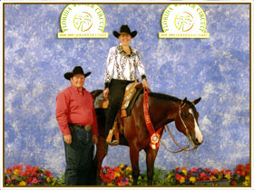 Im Pretty Lazy and Andrea Schneebaum Reserve Champion in Green and Jr Trail Gold Coast... Qualified for the World Show Trail. |
No Doubt Im Lazy OWNED BY: FRANK & LINDA BERRIS Congress Masters Western Pleasure Top Ten |
|
Slow Lopin Louie owned by Clint Collingsworth 2008 Tom Powers Reserve Champion 2 YO Ltd NP Western Pleasure |
Lope Lazy Lope 2008 Tom Powers 2 YO Ltd Western Pleasure Top Five |
|
Lazy Dazi owned by Carol Ann Kenny 2007 NSBA BCF and World Show Top Ten placer Yearling LL |
No Doubt Im Lazy owned by Gail Waters |
|
Just Doin It Lazy owned by Karen Mundy 2007 Southern Belle HUS LL Reserve Champion (tie) |
|
(C) 2012 Lazy Loper - All Rights Reserved | Designed by Qhorse.com